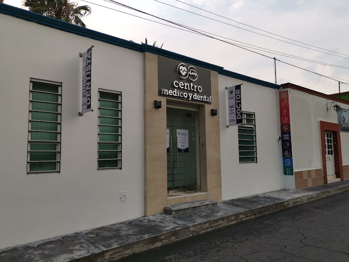
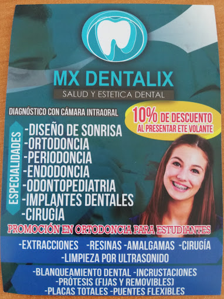
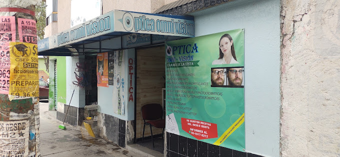
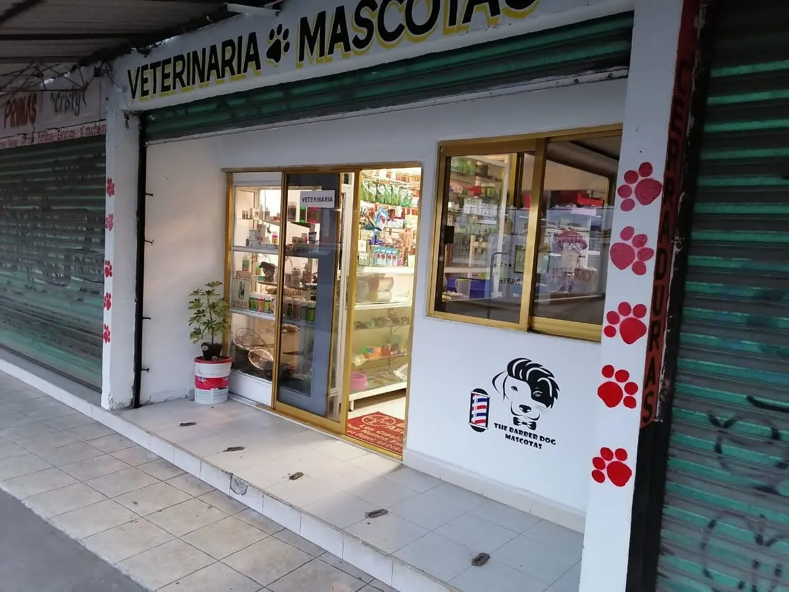

Lo más primordial en cualquier ubicación es tener un lugar donde se pueda asistir a revisión médica, aquí podrás saber que servicios médicos, así como lo son:
▪️ Consultorio Médico.
▪️ Consultorio Dental
▪️ Consultorio Óptico
▪️ Consultorio Veterinario
Consultorio Médico
En el municipio de Jaltenco se encuentran una cantidad de 7 consultorios dentales, los cuales son:
▪️ Consultorio Médico
Ubicado en: Climaco Ramírez Manzana 025, San Andres, 55780 Jaltenco, Méx.
▪️ Consultorio Médico Dr. Leonel Zamora
Ubicado en: Lic. Benito Juárez Manzana 008, San Andres, 55780 Jaltenco, Méx.
▪️ Centro Médico y Dental
Ubicado en: Allende, Centro, 55780 Jaltenco, Méx.
▪️ Centro de Salud de Jaltenco
Ubicado en: De Gante 22, San Andres, 55780 Jaltenco, Méx.
▪️ Consultorio Medico Dr. David Zenteno
Ubicado en: Vicente Guerrero Manzana, San Andres, 55780 Jaltenco, Méx.
▪️ Consultorio médico Dr Ledezma
Ubicado en: 1o. And. Istmo 59A, Alborada Jaltenco, 55788 Alborada Jaltenco, Méx.

Consultorio Dental
En el municipio de Jaltenco se encuentran una cantidad de 6 consultorios dentales, los cuales son:
▪️ CONSULTORIO DENTAL
Ubicado en: Bahia 96, Bahias de Jaltenco, 55788 Alborada Jaltenco, Méx.
▪️ Consultorio Dental Serrano
Ubicado en: Estero 80-A, Alborada Jaltenco, 55780 Alborada Jaltenco, Méx.
▪️ Consultorio Dental fg
Ubicado en: Istmo 1, Granjas Ecatepec, 55780 Alborada Jaltenco, Méx.
▪️ Consultorio dental 24 horas
Ubicado en: Canal de Castera, Blvrd Sor Juana Inés de la Cruz esquina, 55783 Alborada Jaltenco, Méx.
▪️ Clinica dental Don Diente
Ubicado en: Av. Sor Juana Ines de la Cruz mz5, Jaltenco, 55783 méx.
▪️ MX DENTALIX
Ubicado en: Península 89B, Alborada Jaltenco, 55788 Alborada Jaltenco, Méx.

Consultorio Óptico
En el municipio de Jaltenco se encuentran una cantidad de 4 consultorios ópticos, los cuales son:
▪️ Omni - Vision
Ubicado en: Quebrada Manzana 030 172 B Local C, Alborada Jaltenco, 55780 Alborada Jaltenco, Méx.
▪️ OPTICAS LONDON
Ubicado en: Istmo 1, Granjas Ecatepec, 55780 Alborada Jaltenco, Méx.
▪️ ÓPTICA CENTRO ÓPTICO FERREG
Ubicado en: Istmo Manzana 034, Bahias de Jaltenco, 55780 Alborada Jaltenco, Méx.
▪️ Óptica
Ubicado en: Istmo 117, Fortuna, 55783 Alborada Jaltenco, Méx.

Consultorio Veterinario
En el municipio de Jaltenco se encuentra una cantidad de 1 consultorio veterinario, el cual es:
▪️ Veterinaria mascota
Ubicado en: Plaza pabellón, Bahias de Jaltenco, 55783 Alborada Jaltenco, Méx.
